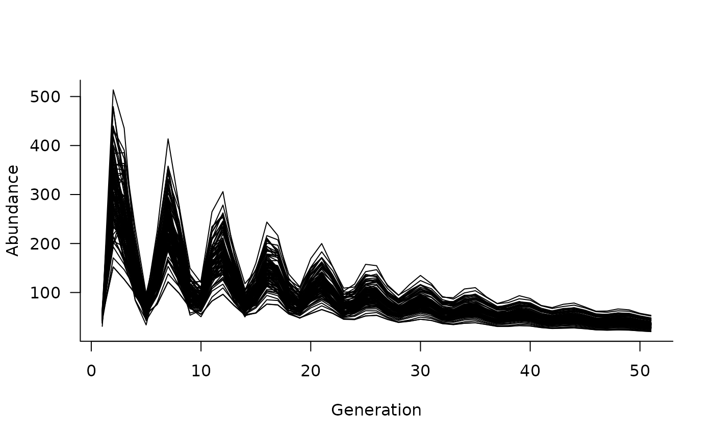
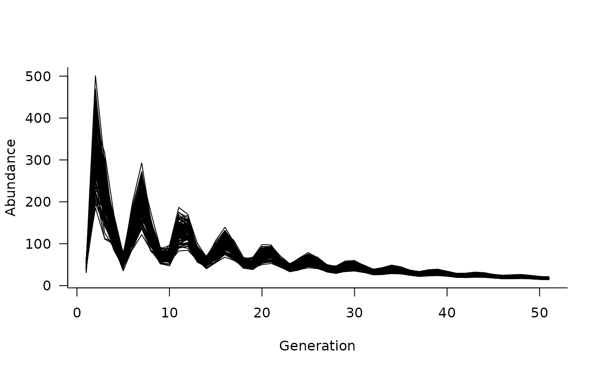
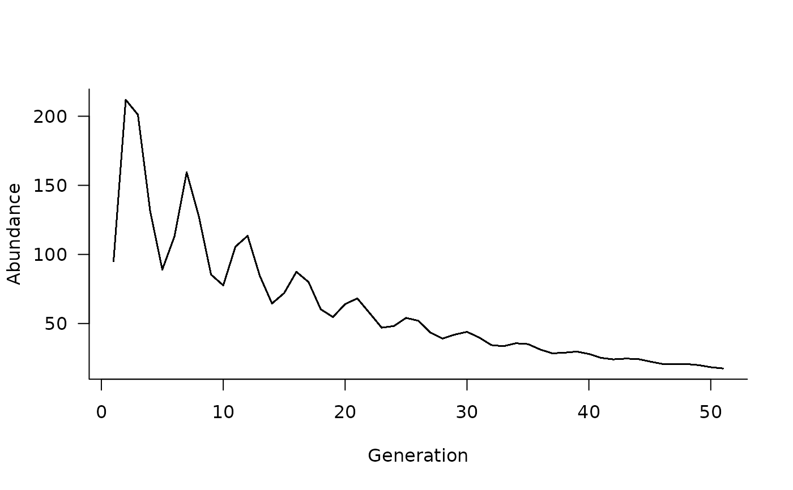

Simulate population dynamics for one or more
species defined by dynamics or
template objects.
# S3 method for dynamics
simulate(
object,
nsim = 1,
seed = NULL,
...,
init = NULL,
options = list(),
args = list(),
args.dyn = NULL,
args.fn = NULL
)
# S3 method for template
simulate(
object,
nsim = 1,
seed = NULL,
...,
init = NULL,
options = list(),
args = list(),
args.dyn = NULL,
args.fn = NULL
)
is.simulation(x)
is.simulation_list(x)a dynamics object created with
dynamics or from a subsequent call to
multispecies or metapopulation.
Alternatively, ojbect can be a template
object from aae.pop.templates, or the output of a
call to simulate in the case of summary
the number of replicate simulations (default = 1)
optional seed used prior to initialisation and simulation to give reproducible results
ignored; included for consistency with simulate generic
method
an array of initial conditions with one row per replicate and one
column per population stage. If obj has been created with
multispecies, initial conditions can be provided as a list or
array with one element or slice per species, or as a matrix, in which case
all species are assumed to share the same initial conditions. Defaults
to NULL, in which case initial conditions are generated randomly
according to options()$aae.pop_initialisation
a named list of simulation options. Currently accepted
values are:
- ntime the number of time steps to simulate, ignored if obj
includes a covariates (default = 50)
- keep_slices logical defining whether to keep intermediate
population abundances or (if FALSE) to return only the final
time slice
- tidy_abundances a function to handle predicted abundance data
that may be non-integer. Defaults to identity; suggested
alternatives are floor, round, or ceiling
- initialise_args a list of arguments passed to the function
used to initialise abundance trajectories. Only used if
init = NULL. Defaults to options()$aae.pop_lambda,
which specifies lambda for Poisson random draws. The default
initialisation function is defined by
options()$aae.pop_initialisation.
- update a function to update abundances from one time
step to the next. Defaults to options()$aae.pop_update.
named list of lists passing arguments to processes defined
in object, including interaction for
multispecies objects. Lists (up to one per process)
can contain a mix of static, dynamic, and function arguments.
Dynamic arguments must be lists with one element per time step.
Function arguments must be functions that calculate arguments
dynamically in each generation based on from the population dynamics
object, population abundances, and time step in each generation.
All other classes (e.g., single values, matrices, data frames)
are treated as static arguments. Covariates contained in numeric
vectors, matrices, or data frames can be formatted as dynamic
arguments with the format_covariates function
this argument is deprecated. List of time-varying
values of args. Defaults to NULL and requires one
element for each generation (specified by covariates or with
options$ntime). Dynamic arguments can now be passed directly
to args
this argument is deprecated.
Named list of functions evaluating additional values of
args based on the matrix and abundances in each generation.
Defaults to NULL. Function arguments can now be passed
directly to args
an object to pass to is.simulation or
is.simulation.list
Includes plot and subset methods
# define a population matrix (columns move to rows)
nclass <- 5
popmat <- matrix(0, nrow = nclass, ncol = nclass)
popmat[reproduction(popmat, dims = 4:5)] <- c(10, 20)
popmat[transition(popmat)] <- c(0.25, 0.3, 0.5, 0.65)
# can extract standard population matrix summary stats
lambda <- Re(eigen(popmat)$values[1])
# define a dynamics object
dyn <- dynamics(popmat)
# simulate from this (50 time steps, 100 replicates)
sims <- simulate(dyn, nsim = 100, options = list(ntime = 50))
# plot the simulated trajectories
plot(sims)

# add some density dependence
dd <- density_dependence(
masks = reproduction(popmat, dims = 4:5),
funs = ricker(1000)
)
# update the dynamics object
dyn <- update(dyn, dd)
# simulate again
sims <- simulate(dyn, nsim = 100, options = list(ntime = 50))
# and plot
plot(sims)

# what if we want to add initial conditions?
sims <- simulate(
dyn,
init = c(50, 20, 10, 10, 5),
nsim = 100,
options = list(ntime = 50),
)
# and plot again
plot(sims)

if (FALSE) {
# note that there is only one trajectory now because
# this simulation is deterministic.
#
# let's change that by adding some environmental stochasticity
envstoch <- environmental_stochasticity(
masks = list(
reproduction(popmat, dims = 4:5),
transition(popmat)
),
funs = list(
function(x) rpois(n = length(x), lambda = x),
function(x) rmultiunit(n = 1, mean = x, sd = 0.1 * x)
)
)
# update the dynamics object and simulate from it
dyn <- update(dyn, envstoch)
sims <- simulate(
dyn,
init = c(50, 20, 10, 10, 5),
nsim = 100,
options = list(ntime = 50),
)
# the rmultiunit draws can be slow but we can speed
# this up by calculating them once per generation
# instead of once per replicate within each generation
envstoch <- environmental_stochasticity(
masks = list(
reproduction(popmat, dims = 4:5),
transition(popmat)
),
funs = list(
function(x, ...) rpois(n = length(x), lambda = x),
function(x, mean, sd) {
pnorm(mean + sd * rnorm(length(x)))
}
)
)
# this requires an argument "function" that takes the
# current state of the population model in each
# iteration and calculates the correct arguments to
# pass to environmental_stochasticty
envstoch_function <- function(obj, pop, iter) {
mat <- obj$matrix
if (is.list(mat)) {
mat <- mat[[iter]]
}
out <- aae.pop:::unit_to_real(
mat[transition(mat)], 0.1 * mat[transition(mat)]
)
list(mean = out[, 1], sd = out[, 2])
}
# update the dynamics object and simulate from it
dyn <- update(dyn, envstoch)
sims <- simulate(
dyn,
init = c(50, 20, 10, 10, 5),
nsim = 100,
args = list(environmental_stochasticity = list(envstoch_function)),
options = list(ntime = 50),
)
# can also add covariates that influence vital rates
# e.g., a logistic function
covars <- covariates(
masks = transition(popmat),
funs = function(mat, x) mat * (1 / (1 + exp(-10 * x)))
)
# simulate 50 random covariate values
xvals <- matrix(runif(50), ncol = 1)
# update the dynamics object and simulate from it.
# Note that ntime is now captured in the 50 values
# of xvals, assuming we pass xvals as an argument
# to the covariates functions
dyn <- update(dyn, covars)
sims <- simulate(
dyn,
init = c(50, 20, 10, 10, 5),
nsim = 100,
args = list(
covariates = format_covariates(xvals),
environmental_stochasticity = list(envstoch_function)
)
)
# and can plot these again
plot(sims)
# a simple way to add demographic stochasticity is to change
# the "updater" that converts the population at time t
# to its value at time t + 1. The default in aae.pop
# uses matrix multiplication of the vital rates matrix
# and current population. A simple tweak is to update
# with binomial draws. Note that this also requires a
# change to the "tidy_abundances" option so that population
# abundances are always integer values.
sims <- simulate(
dyn,
init = c(50, 20, 10, 10, 5),
nsim = 100,
options = list(
update = update_binomial_leslie,
tidy_abundances = floor
),
args = list(
covariates = format_covariates(xvals),
environmental_stochasticity = list(envstoch_function)
)
)
# and can plot these again
plot(sims)
}